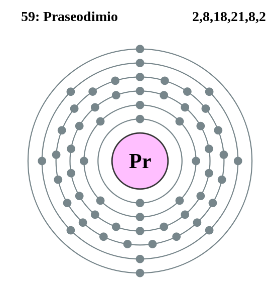

|
|
||
|
PRASEODIMIO Semi aislado en 1841, el praseodimio se identificó claramente como elemento en 1885. El praseodimio es blando, plateado, maleable, dúctil y desarrolla una capa de óxido verde cuando se expone al aire. Se encuentra con otros elementos de tierras raras en distintos minerales, principalmente en la monacita y la bastnasita. Los óxidos de tierras raras, incluidos los del praseodimio, son algunas de las sustancias más refractarias. Junto con otros metales de tierras raras, se usa para arcos de carbono y para añadir un color amarillo transparente al vidrio y al esmalte. Su presencia en el vidrio de didimio ayuda a proporcionar la coloración protectora en las gafas para soldadores. |
 |
DATOS Número Atómico: 59 Peso Atómico: 140.9 Electronegatividad: 1.1 Configuración Electrónica: 4f36s2 Estados de Oxidación: +3 No. de Electrones de Valencia: 5 |